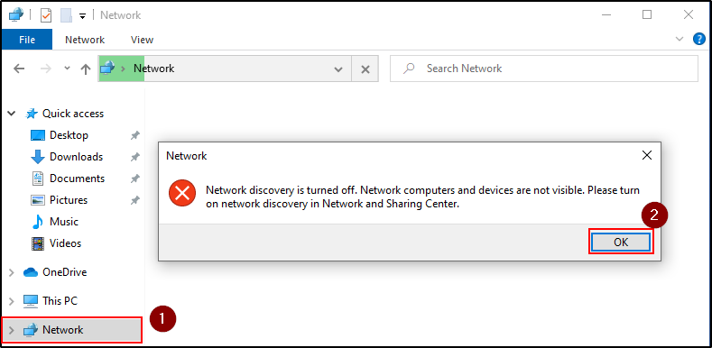

Small Lab Update
We need to do "Device Discovery" on both the Windows 10 machines (THEPUNISHER and SPIDERMAN)
If it gives an error, follow what the error says to fix it
Another bugfix, if you can't see them into the Network section:
Go into Control Panel --> Administrative Tools --> Services And look for the two services "Function Discovery Provider Host" & "Function Discovery Resource Publication. Set both services to "Automatic (Delayed Start)". Now right click each of these two services and start them.
